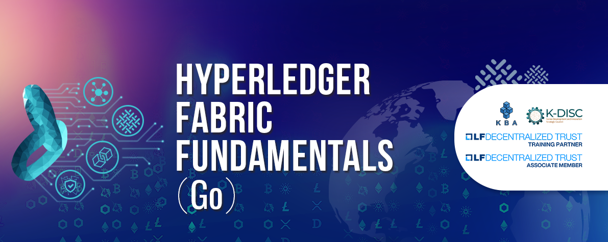
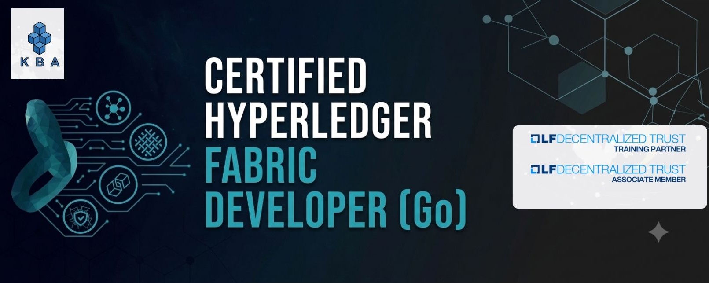
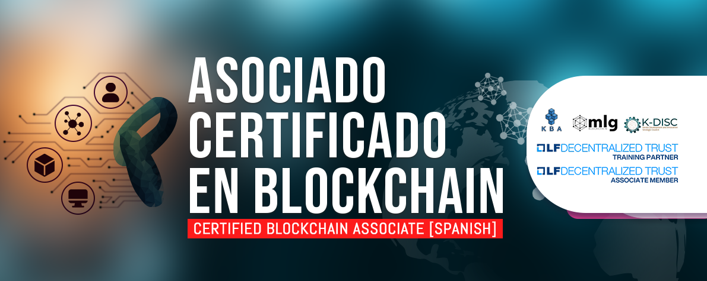

Kerala Blockchain Academy (KBA), an Associate member, training partner, and Certified Service Provider of LF Decentralized Trust, offers training and certification programs on the Hyperledger Fabric platform. In this course, you will learn about the technical architecture and logical architecture of various components in the Hyperledger Fabric (v2.5) with the help of a fictional case study. We will understand the business scenario, write Chaincode for the required business logic, and finally interact with the Chaincode using an application written with the Fabric Go SDK. We will go through all the important concepts of Hyperledger Fabric, which will help you to understand how to seamlessly write better applications for a Fabric network. At the end of this course, learners will create a mini-project that demonstrates key Fabric features.

Asociado Certificado en Blockchain (CBA) es el programa de certificación insignia ofrecido por Kerala Blockchain Academy en colaboración con MLG Blockchain, Canadá. Este curso proporciona a los nuevos aprendices un recorrido completo por los fundamentos de esta tecnología. Su objetivo principal es hacer más accesible el aprendizaje de blockchain, una tarea que puede resultar desafiante. Adaptándose a los últimos avances en el espacio de la blockchain. El CBA, que se mantiene actualizado con los últimos avances en el campo de la blockchain, constituye el punto de partida ideal para aquellos que desean desarrollar sus carreras en el ecosistema de la blockchain. Aunque gran parte del contenido se basa en teoría, los conceptos clave se presentan mediante videos, demostraciones y ejercicios prácticos. Este programa para principiantes en blockchain brinda a los estudiantes una visión general amplia de los conceptos esenciales de la tecnología blockchain y sienta las bases necesarias para el desarrollo de aplicaciones y programas en diversos dominios de la blockchain.

Asociado Certificado en Blockchain (CBA) es el programa de certificación insignia ofrecido por Kerala Blockchain Academy en colaboración con MLG Blockchain, Canadá. Este curso proporciona a los nuevos aprendices un recorrido completo por los fundamentos de esta tecnología. Su objetivo principal es hacer más accesible el aprendizaje de blockchain, una tarea que puede resultar desafiante. Adaptándose a los últimos avances en el espacio de la blockchain. El CBA, que se mantiene actualizado con los últimos avances en el campo de la blockchain, constituye el punto de partida ideal para aquellos que desean desarrollar sus carreras en el ecosistema de la blockchain. Aunque gran parte del contenido se basa en teoría, los conceptos clave se presentan mediante videos, demostraciones y ejercicios prácticos. Este programa para principiantes en blockchain brinda a los estudiantes una visión general amplia de los conceptos esenciales de la tecnología blockchain y sienta las bases necesarias para el desarrollo de aplicaciones y programas en diversos dominios de la blockchain.